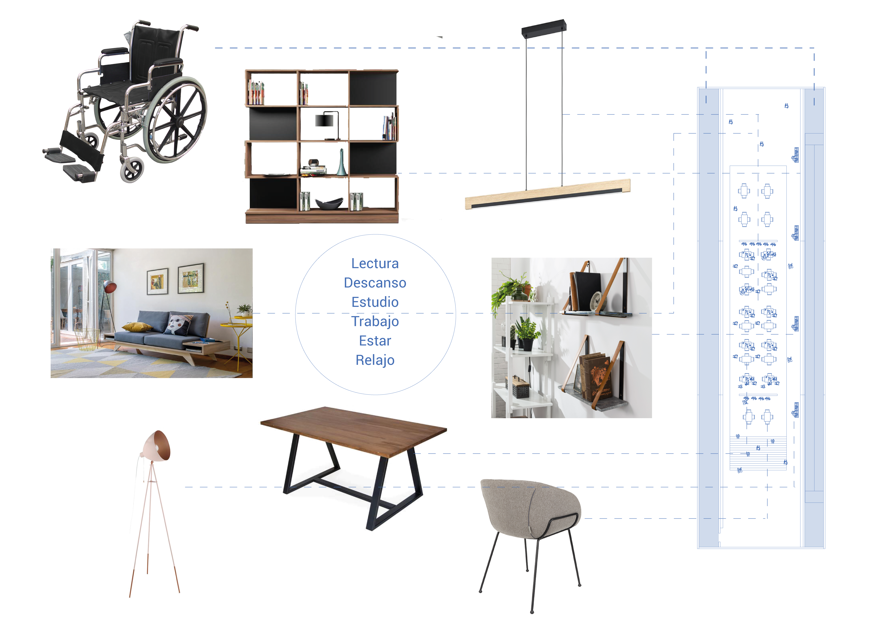

PLANTA AUDITORIO
Espacios centralizados a la exposición de contenidos educacionales, contando con la materialidad acústica eficiente para un grato ambiente sonoro.
Espacios centralizados a la exposición de contenidos educacionales, contando con la materialidad acústica eficiente para un grato ambiente sonoro.

PLANTA BIBLIOTECA - SALA DE DESCANSO
Espacio con doble altura para lograr combinar la quietud con el movimiento de ambos ambientes, destacando la comodidad de los lugares de quietud y los grandes recorridos para desplazarse.
Espacio con doble altura para lograr combinar la quietud con el movimiento de ambos ambientes, destacando la comodidad de los lugares de quietud y los grandes recorridos para desplazarse.